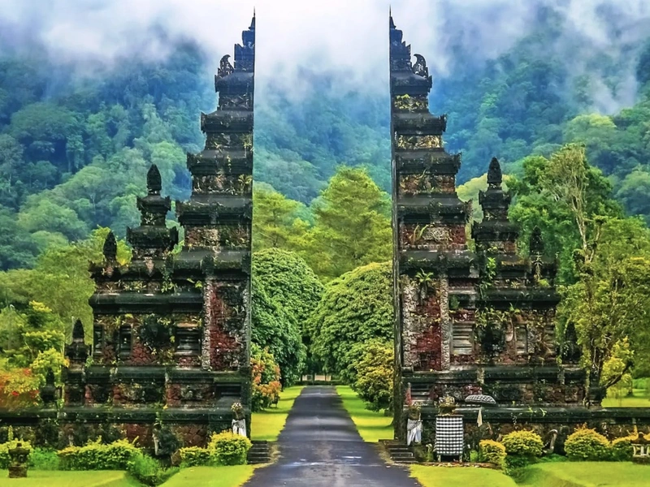
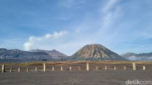
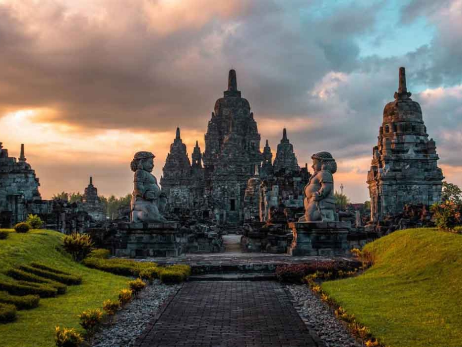

Tempat Wisata Lokal
Temukan tempat-tempat wisata terbaik yang wajib dikunjungi! Dari pantai eksotis, gunung megah, hingga wisata budaya yang kaya – semua ada di sini. Klik tombol di bawah ini!
Call Us: +62 815-6456-7890
Email: sman20@travel.com

Indonesia adalah negara kepulauan yang kaya akan destinasi wisata, baik alam, budaya, maupun kuliner. Dengan lebih dari 17.000 pulau, Indonesia menawarkan berbagai keindahan yang memikat wisatawan dari seluruh dunia.
Jelajahi keindahan Indonesia dengan destinasi wisata menakjubkan, dari pantai tropis hingga pegunungan yang memukau.
Temukan kekayaan wisata lokal, kuliner khas, dan acara komunitas di Indonesia yang siap memberikan pengalaman tak terlupakan.
Rencanakan perjalanan Anda ke Indonesia dengan mudah dan nikmati petualangan luar biasa.
Kami siap membantu Anda dengan informasi wisata, rekomendasi destinasi, dan panduan perjalanan terbaik
Temukan tempat-tempat wisata terbaik yang wajib dikunjungi! Dari pantai eksotis, gunung megah, hingga wisata budaya yang kaya – semua ada di sini. Klik tombol di bawah ini!

Gunung Bromo adalah gunung berapi aktif yang terletak di Jawa Timur dan menjadi salah satu destinasi wisata alam paling terkenal di Indonesia. Gunung ini terkenal dengan pemandangan matahari terbitnya yang memukau, lautan pasir luas, dan kawah berasap. Terletak di kawasan Taman Nasional Bromo Tengger Semeru, Bromo juga memiliki nilai budaya karena erat dengan tradisi Suku Tengger.
Detail
Yogyakarta adalah kota budaya di Pulau Jawa, Indonesia, yang dikenal sebagai pusat seni, pendidikan, dan sejarah. Kota ini terkenal dengan Keraton Yogyakarta, seni batik, pertunjukan wayang, serta destinasi wisata seperti Malioboro dan Candi Prambanan. Yogyakarta juga merupakan pintu gerbang menuju Candi Borobudur.
Detail
Candi Borobudur adalah candi Buddha terbesar di dunia yang terletak di Magelang, Jawa Tengah. Dibangun pada abad ke-8, candi ini memiliki arsitektur megah dan relief yang menggambarkan ajaran Buddha. Tempat ini menjadi destinasi wisata sejarah dan spiritual yang populer, terutama saat matahari terbit.
Detail